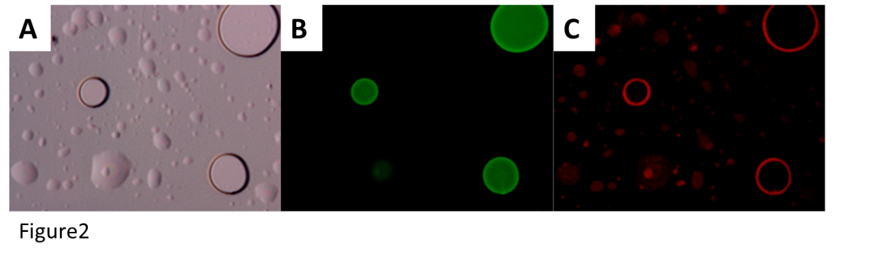
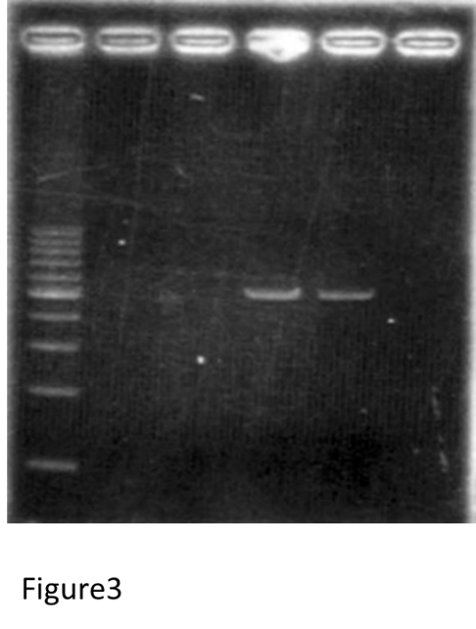
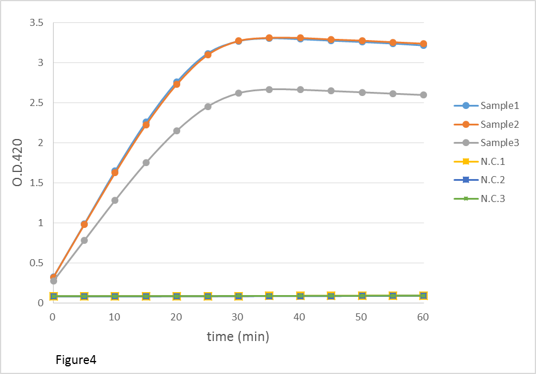

Result
・Construction of vesicles
We observed vesicles with a fluorescence microscope (Figure2). These pictures were same ones.
We found some sphere structures in the pictures. They were vesicles which contain some fluorescent dyes.
The upper right vesicle was about 10 μm. We took 3 kinds of pictures. A was a normal microscope picture.
B was a picture which shows calcein in the vesicles. We can see green fluorescence in the picture, it is calcein.
C was a picture which shows rhodamine in the membrane of the vesicles. We can see red fluorescence in the picture, it is rhodamine.

・Plasmid purification and electrophoresis
Figure3 shows the result of electrophoresis after plasmid purification.
In the leftmost lane, we electrophoresed 100bp ladder, and in the 4th and 5th lane from left, we electrophorese pET-lacZ.
4th and 5th lane were same samples. We can see bands in 4th and 5th lane, and they were pET-lacZ.
From this result, we can realize that the plasmid purification succeeded.

・Concentration measurement of DNA with a fluorometer
After plasmid purification, we measured the DNA concentration. Concentration of template DNA was 12ng/μl.
・Measurement of O.D.420 by Microplate Reader
We measured both samples and negative controls (N.C.) three times. We measured O.D.420 at 37℃ every 5 minutes for 1 hour.
The result was Figure4. Horizontal axis indicates the time after the mix of OPNG solution and translation product.
Vertical axis indicates O.D.420, and it means the volume of o-nitrophenol.
The graphs of the samples increased significantly, this result indicates that lacZ are transcribed and translated in all samples.
